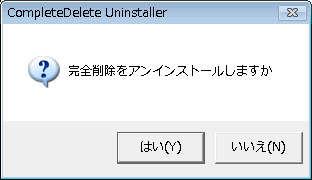

| アンインストール |
|
| アンインストール |
|
スタートメニューまたはコントロールパネルの「アプリケーションの追加と削除」に作られた「完全削除アンインストール」メニューからアンインストールできます。

アンインストール処理終了後、プログラム本体およびヘルプファイルを削除してください。 （ファイル本体は自動的には削除されません）
次のレジストリを削除します
HKCU\Software\hi soft\compdel キーおよび配下にあるキー、データ全て
HKCU\Software\hi_soft の中にある compdel というストリング
アプリケーションの追加と削除に登録した場合
HKCU\Software\Microsoft\Windows\CurrentVersion\Uninstall の中にある compdel というキー （Windows95系統では HKLM\... を見る）
デスクトップおよびスタートメニューに登録されたショートカットを削除